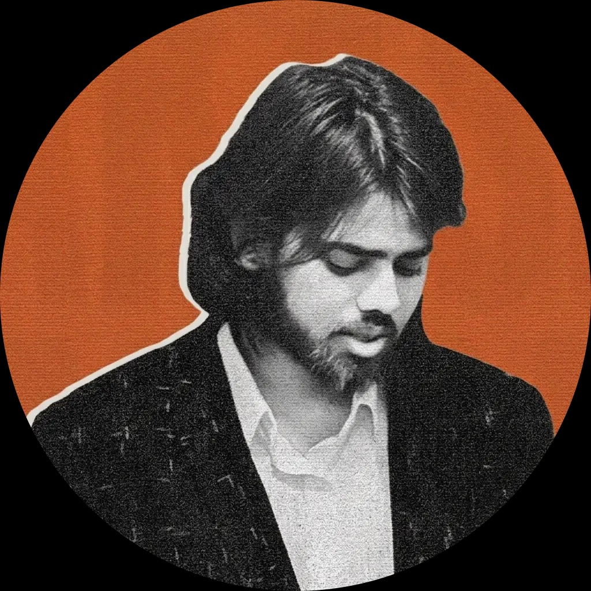

Reconstructing the Authentic Voice of Mah Laqa Bai
For over a century, modern scholarship has operated under the assumption that Mah Laqa Bai Chanda systematically revised her poetry over time to replace regional Deccani idioms with northern Urdu standards. This narrative was deeply entrenched in academic literature, positing that she deliberately excised her native dialect to align her work with the increasingly prestigious, Persianized standards of the Nizam's court.
The genesis of this project was rooted in that very assumption. Following the methodology established in my previous book, Sher Behtar Kaise Hua—which examined the art of poetic correction and linguistic evolution—my initial goal was simply to document Mah Laqa Bai's authorial revisions. I intended to trace the older textual layers of her work and present them alongside the "standardized" text to demonstrate how her poetics evolved over her lifetime.
To execute this, it was necessary to bypass the widely circulated 1906 print edition (Gulzar-e-Mah Laqa, compiled by Ghulam Samdani Khan Gawhar) and directly consult her lifetime manuscripts. I initiated a comprehensive effort to acquire the three primary witnesses of her Diwan: the 1799 British Library presentation copy, the 1811 Telangana Archives copy, and the definitive 1818 Salar Jung manuscript.
The expectation was clear: a systematic collation of these three manuscripts would reveal a gradual erasure of Deccani vocabulary between 1799 and 1818.
The empirical results completely contradicted this hypothesis. Not only were the ghazals from the 1799 London manuscript perfectly preserved in the 1818 Salar Jung manuscript without Deccani erasure, but the newer ghazals added exclusively to the 1818 manuscript still maintained a heavily dominant Deccani flavor. While minor poetic adjustments and transpositions exist between the manuscripts, there is not a single instance of Mah Laqa Bai actively removing Deccani words or regional idioms.
This discovery necessitated a paradigm shift. What began as a project to recover the older, "unrevised" layers of her text quickly turned into a full-scale textual reconstruction. It became overwhelmingly clear that the later linguistic normalizations were not authorial, but editorial. The systematic erasure of her Deccani heritage was a posthumous textual corruption introduced by Ghulam Samdani Khan Gawhar, the editor of the 1906 lithograph.
Consequently, all modern scholarship for the past 120 years—including the foundational editions by Shafqat Rizvi, Samina Shawkat, Rahat Azmi, and others—has been based on a heavily mediated and sanitized text derived entirely from the flawed 1906 lithograph.
Because institutional repository restrictions often prohibit the direct reproduction of physical manuscript folios, this digital platform was built to democratize access to the primary source data.
It is important to note that this website is a companion site, not the fully reconstructed critical edition itself. This site does not host the final reconstructed text, nor does it apply the necessary editorial emendations or conjectures required to fix scribal errors. Instead, it presents the raw, unedited collation data exactly as it exists within each individual witness. This open-access framework allows independent researchers to independently verify the textual variants and replicate the computational findings that will underpin the forthcoming printed edition.

Poet · Editor · Independent Researcher
Akash Arsh is an Urdu poet and independent researcher working in the classical Urdu and Dakhni tradition. After four years at Rekhta, he turned to textual criticism and editing. He is the author of Sher Behtar Kaise Hua and Baatein Ghazal Ki.
This critical edition is a completely independent scholarly endeavor, conducted without institutional funding or university grants. The extensive costs of travel across India, repository access fees, and hundreds of hours of collation and coding were borne entirely by the editor without pay.
Believing that primary source data should not sit in archives or behind academic paywalls, I have taken a strict copyleft approach to make these findings freely accessible to the public. Support is entirely optional and comes with no perks: everything here stays free. If you find value in this research and wish to support ongoing open-access humanities work, please consider making a contribution.
In India: scan the UPI code. Elsewhere: support monthly on Patreon.